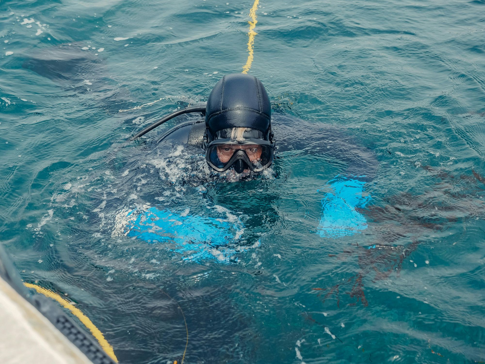
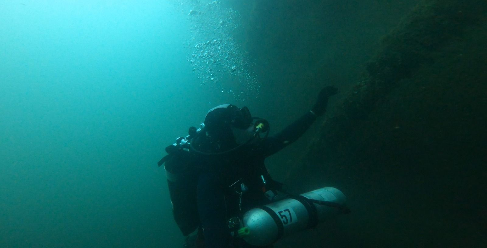

Unterwasserarbeiten, Inspektion und Engineering für Behörden und Werke.
Wir tauchen, messen, dokumentieren und lösen technische Probleme unter Wasser. Von der ersten Abklärung bis zum fertigen Bericht aus einer Hand.
Acht Arbeitsbereiche, ein Ansprechpartner
Brückenpfeiler, Ufermauern, Wehre, Seewasserfassungen, Leitungen und Seekabel systematisch prüfen.
Rastersuche mit GPS-Protokoll, auch bei Nullsicht. Gegenstände, Geräte, Fahrzeuge und Boote.
Montage, Reparatur, Wartung und Reinigung ohne Trockenlegung und ohne Betriebsunterbruch.
Gefahrstoffe lokalisieren und dokumentieren. Zivile Sprengarbeiten durch zertifizierten Sprengmeister.
Tauchbericht, Fotos, 4K-Video und Positionen für Bauakten, Gutachten und Versicherungen.
Problemanalyse, Konzept, Konstruktion von Halterungen und Vorrichtungen, Montage durch den eigenen Taucher.
Planung und Koordination von Unterwasserprojekten: Termine, Sicherheit, Beteiligte und Abschluss.
24/7 alarmierbar bei Schäden, Verlusten und dringenden Kontrollen, zum Beispiel nach Hochwasser.



Under Pressure Group · Luzern
industrietaucher.ch · 24/7 Notfall